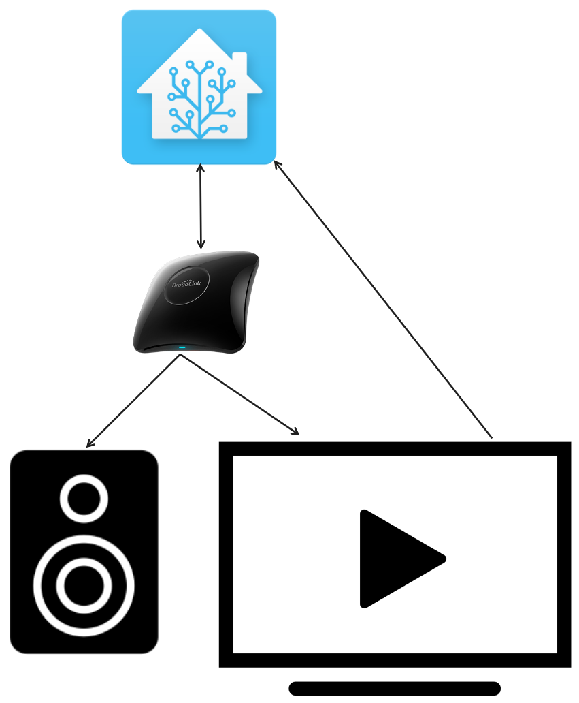

The basics of Home Assistant
Home Assistant is a centralized place to access all your smart devices. Being confined to one vendor and ecosystem comes with lots of downsides. Does your ecosystem not have a certain device then you need to buy into another sytem that comes with another app. This way many smarthome enthusiasts end up with many apps for all their different devices. Or you end up paying a lot to just have a simple sensor that's specifically for your ecosystem. NO MORE!
Home assistant integrates most of these devices and apps into one. On my Home Assistant I have combined many things from Philips Hue lights, IKEA lights and buttons, Spotify, Tile, ESPHome to Broadlink IR and RF remote. It is even capable to make "dumb" things like an old audio system smarter with the right devices.
Automations
Home Assistant allows you to create automations that would usually not be possible.
- Turn on a Hue light with and IKEA motion sensor?
- Turn off your TV when it is not idle but paused for 10 minutes?
- Turn off the TV, lights and all other devices when you leave the house?
Here is one of my automation as an example: It checks how long the TV has been idle or paused. If it has been either of those for 10 minutes it will turn the TV and speakers off. It will do this by sending a infra red command to the TV and then the speakers that is the same as the physical off button on their actual remote.

All these and a lot more unusual automations are possible with Home Assistant!Addons
Home Assistant has a lot of addons to extend it's capabilities. A couple of my installed addons:
- Zigbee2MQTT: let's you connect all zigbee devices to a single coordinator. Also localize the devices so they work without cloud connections.
- ESPHome: physically attach whatever sensor you want to an ESP device, code it and use it in HA.
- Google Drive backup: automatically backup HA whenever it is updated.